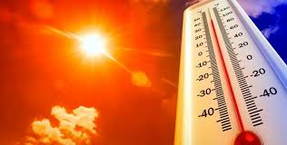

Os Principais Problemas

Aumento das Enchentes
A remoção da vegetação reduz a capacidade do solo de absorver água, aumentando o risco de enchentes urbanas.

Calor Excessivo e Ilhas de Calor
A falta de árvores nas cidades intensifica o calor, criando ilhas térmicas que prejudicam a saúde pública.
Redução da Qualidade de Vida
Menos áreas verdes resultam em menos lazer, mais poluição e maior estresse para os moradores urbanos.